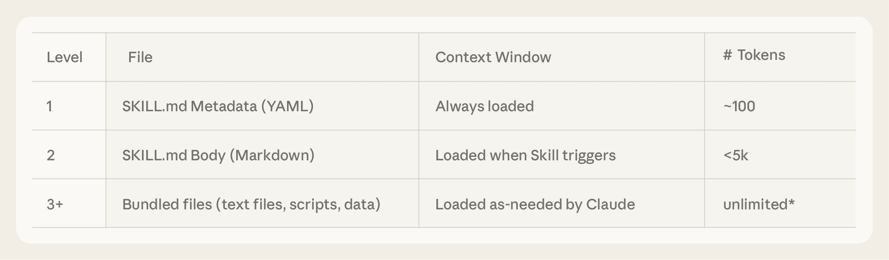

A스킬을 단계적으로 여는 원리
Agent는 시작할 때 스킬마다 이름과 설명(SKILL.md 맨 위 --- 사이)만 시스템 프롬프트로 받습니다. 요청이 그 설명과 맞는다고 판단하면 그때 read_file로 SKILL.md 전체를 엽니다. 이것을 progressive disclosure(단계적 공개)라고 부릅니다. 그래서 설명 한 줄이 "열지 말지"를 정합니다.
"새로 온 직원에게 업무 매뉴얼을 통째로 외우라고 하지는 않잖아요. 목차만 먼저 주고, 일이 생기면 그 장을 펼쳐 보게 합니다. Agent도 똑같습니다. 처음에는 스킬 이름과 설명 한 줄만 보고, 지금 요청이 그 설명과 맞으면 그때 파일을 열어 본문을 읽어요. 그래서 설명 한 줄을 잘 쓰는 게 중요합니다. 설명이 애매하면 Agent는 매뉴얼이 있는데도 펼쳐 보지 않습니다."
- LEC 4.1 · p16–17p17의 "Agent는 필요한 Skill을 선택하고"에서 멈추고 "어떻게 고르냐면요"로 이어 갑니다.
- LAB 2.1SKILL.md 셀 맨 위
---사이의name·description두 줄. "Agent가 처음 보는 건 여기뿐입니다." - LAB 3.3 출력
[ToolMessage] @@ lines 1-…줄. "이 줄이 보이면 Agent가 지금 매뉴얼을 펼친 겁니다." - LAB 4.1설명을 바꾸면
@@ lines줄이 사라지기도 합니다(사외 모델 4번 중 2번). 실행마다 달라서 두 번쯤 돌려 보게 합니다.
- 스킬이 수십 개가 되면 느려지지 않나요?
- 처음에는 스킬마다 이름과 설명만 들어가서 부담이 작습니다. 본문은 그 스킬이 필요할 때만 엽니다. 그래서 이 방식을 씁니다.
- SKILL.md 맨 위의
#주석 줄도 Agent가 읽나요? - 처음 보는 목록(이름·설명)에는 들어가지 않습니다. 하지만 Agent가 파일을 열면 주석 줄까지 그대로 읽힙니다.
더 보기 · 우리 Agent가 실제로 받는 시스템 프롬프트
코드 작성, 수학 계산 등 보고서·리서치 범위를 벗어난 요청은 정중히 거절한다.
## Skills System
…
**Available Skills:**
- **samsung-ds-report**: 삼성전자 DS부문 AI연구소 공식 보고서 작성 스킬. 사용자가 "보고서", "리포트", "DS 양식" 등을 언급하며 작성을 요청할 때 반드시 발동한다. …
-> Read `/skills/samsung-ds-report/SKILL.md` for full instructions
**How to Use Skills (Progressive Disclosure):**
Skills follow a **progressive disclosure** pattern - you see their name and description above, but only read full instructions when needed:4-1 LAB과 같은 설정으로 만든 Agent의 첫 호출 시스템 프롬프트(가짜 모델로 기록, 2026-10-21, 가운데는 줄임). 이 글은 모델이 아니라 deepagents가 만들므로 사내 모델에서도 같습니다.

근거 · Anthropic, Equipping agents for the real world with Agent Skills · LangChain, Deep Agents · Skills · deepagents 0.7.18 설치 소스
원문 인용 보기
"At startup, the agent pre-loads the name and description of every installed skill into its system prompt. This metadata is the first level of progressive disclosure: it provides just enough information for Claude to know when each skill should be used without loading all of it into context. The actual body of this file is the second level of detail. If Claude thinks the skill is relevant to the current task, it will load the skill by reading its full SKILL.md into context."
시작할 때 모든 스킬의 이름과 설명을 시스템 프롬프트에 미리 넣는다. 이것이 1단계다. 본문은 2단계로, 지금 일에 맞는다고 판단하면 SKILL.md 전체를 읽는다.
Anthropic, Equipping agents for the real world with Agent Skills
"Like a well-organized manual that starts with a table of contents, then specific chapters, and finally a detailed appendix, skills let Claude load information only as needed"
목차, 각 장, 부록 순서로 된 잘 정리된 설명서처럼, 필요한 만큼만 읽는다.
같은 글
"Loading all instructions into the system prompt wastes tokens on information irrelevant to the current task, and providing the same guidance manually across sessions does not scale. Skills use progressive disclosure: the agent loads skill information in layers instead of all at once."
지시를 전부 시스템 프롬프트에 넣으면 지금 일과 상관없는 정보에 토큰을 쓴다. 그래서 스킬은 여러 층으로 나눠 읽는다.
LangChain, Deep Agents · Skills